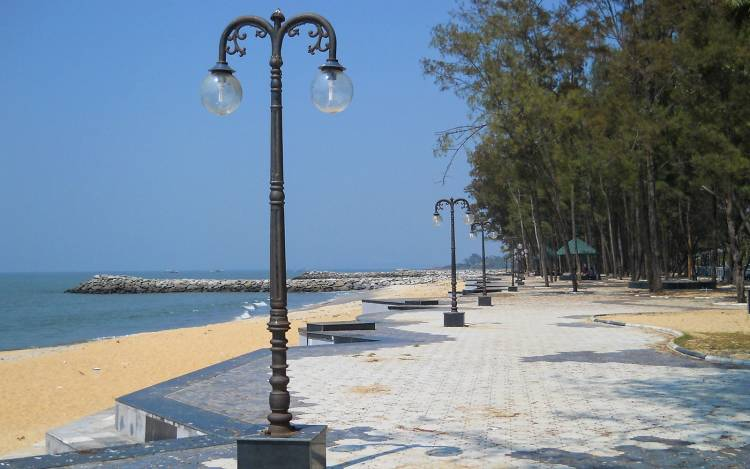
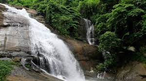
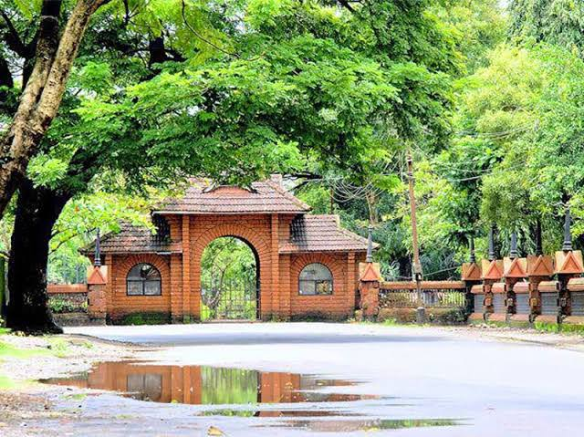
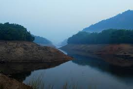
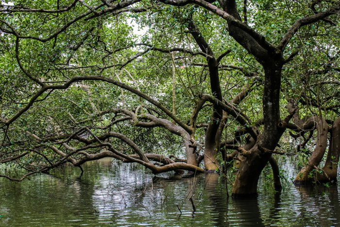

Places to visit

Kozhikode Beach
Iconic beach offering leisure and scenic vistas.

Beypore
Historic port town showcasing Kerala's maritime legacy.

Kappad Beach
Historical site where Vasco da Gama landed.

Thusharagiri Waterfalls
Serene falls amidst verdant landscapes.

Mananchira Square
Urban park ideal for leisurely strolls.

Pazhassi Raja Museum
Historical museum reflecting regional history.

Kozhippara Waterfalls
Picturesque falls amidst natural beauty.

Kakkayam Dam
Scenic dam surrounded by lush greenery.

Matri Dei Cathedral
Religious site with architectural beauty.

Kadalundi Bird Sanctuary
Avian paradise for birdwatchers.